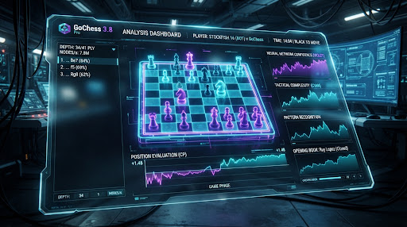
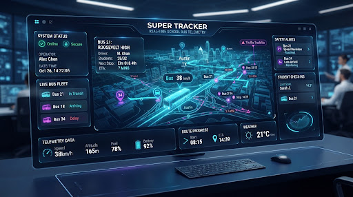

Selected Engineering Projects
A curation of high-performance chess engines, real-time school bus tracking telemetry systems, and distributed platforms engineered with mathematical precision, ultra-low latency, and modern cybernetic clarity.
NovaChess 3.8 Pro
Next-generation hybrid neural engine with AVX2 SIMD bitboard evaluation, parallelized lazy SMP tree searches, and compiled high-efficiency WebAssembly runtime.

Parallel Alpha-Beta & NNUE Ingestion
Standard classical chess engines rely heavily on handcrafted evaluation polynomials that break down in tactically complex, non-linear endgames. NovaChess was re-architected from scratch using a decoupled 64-bit magic bitboard representation coupled with an ultra-quantized NNUE (Efficiently Updatable Neural Network) architecture.
By utilizing SIMD AVX-512 and NEON vectorization intrinsics, the inner evaluation layer performs linear matrix accumulations directly inside CPU cache L1 without leaving register space. The search algorithm utilizes Lazy SMP threading across up to 64 virtual cores, combining Principal Variation Search (PVS), Late Move Reductions (LMR), and Null Move Pruning with dynamic verification margins.
Compiled via Emscripten with SharedArrayBuffer and SIMD flags, delivering over 4.2M nodes per second directly in client browsers without remote server dependencies. Fully packaged with automated UCI protocol abstraction.
Super Tracker: School Bus Telemetry
Distributed real-time school transit tracking system delivering sub-350ms geospatial updates, NFC student attendance check-ins, and automated push notifications for educational districts.

High-Throughput GIS Streaming & Edge Ingestion
District transportation networks face severe reliability issues during morning peak windows: GPS dead zones, uncalibrated cellular latency spikes, and fragmented notifications to worried parents. Super Tracker replaces disjointed legacy trackers with an event-driven microservice mesh running on lightweight Go daemons and MQTT packet brokers.
Onboard IoT hardware captures CAN-bus vehicle diagnostics, GPS coordinates, and student RFID/NFC card taps. These records stream continuously into a distributed Kafka pipeline, validated against PostGIS spatial polygons in sub-millisecond windows to trigger dynamic 500-meter geo-fence arrival rings, speed anomalies, and missed stops.
Parents receive end-to-end encrypted real-time vehicle trajectories via WebSocket tunnels without exposing student PII or exact residential coordinates to intermediate relay servers.
Experimental Systems & Low-Level Tooling
Explorations in low-level memory layout, distributed synchronization protocols, and bespoke frontend design engines.
Apex Interface Engine
Design system and headless UI token engine engineered specifically for low-latency financial dashboards and military telemetry consoles with zero layout thrashing.
Synapse Grid Message Broker
Lightweight, memory-mapped publish-subscribe bus executing Raft consensus protocol. Achieves 2.1M messages/second per single compute instance with disk write journaling.
BitVortex Bitboard Inspector
Developer debugger visualizer for 64-bit integer masks, sliding attack rays, de Bruijn multiplication indexes, and occupancy magic bitboards in real time.
Zero bloat. Mechanical sympathy. Deterministic execution.
Every repository and architectural blueprint adheres to strict memory safety boundaries, sub-millisecond p99 latency targets, and comprehensive telemetry verification matrices.
Have an engineering challenge or mission-critical system to build?
I am currently open to consulting engagements, architectural reviews, and technical collaborations in distributed systems, computational engines, and real-time telemetry pipelines.